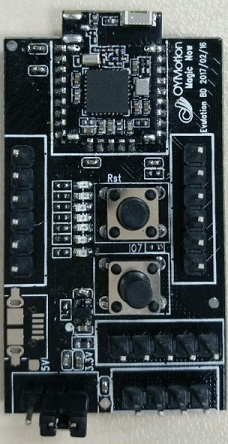
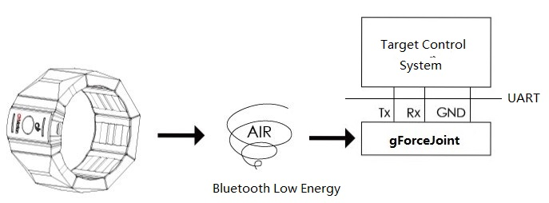
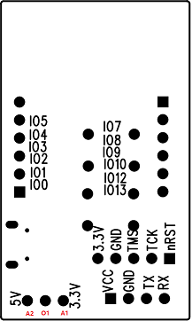
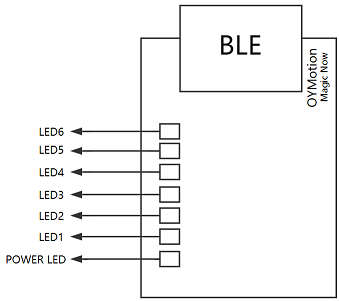

gForce 100 Embedded Suite User Guide
July 4th, 2017
Overview
This user guide is intended to help developers to understand how to adopt gForce 100 Embedded Suite to add gesture and forearm orientation control to their embedded design.
gForce 100 Embedded Suite includes one and one gForceJoint module.
A BLE Peripheral that sends out recognized gestures and orientation in quaternions over BLE.
- gForceJoint
A BLE Central that finds, pairs and connects with the gForce Armband, and then parses and forwards the data thru a UART interface.
gForceJoint acts as a bridge between the gForce 100 Armband and target system to control.

Developers can wire the gForceJoint to the UART inteface of the target control system (e.g an Arduino board, or an Raspberry Pi) so that the target control system can be controled by the gForce 100 Armband.

Connecting gForce with gForceJoint
To make things easier, gForceJoint is designed to automatically find, pair and connect with the first gForce Armband with a strong Bluetooth signal (RSSI) level above a preset threshold. In general, it would be the closest gForce Armband that has the highest RSSI. Therefore, after powering on gForce 100 armband and gForceJoint, put the gForce 100 Armband as close to the gForceJoint as within 5 cm. Successful connection turns the green LED on the gForce Armband to flash at a relatively high frequency.
To disconnect, simply turn off the gForce 100 Armand.
Connecting gForceJoint with Target Control System
gForceJoint provides GPIO and UART to interface with target control system. However, UART is recommended.
The following figure shows the IOs of gForceJoint.

VCC is the power supply to the gForceJoint board. gForceJoint is designed to support 3.3V or 5V power supply.
- When 5V is used, the jumper should be put to connect 'A2' and 'O1'.
- When 3.3V is used, the jumper should be put to connect 'A1' and 'O1'
The UART interface has the VCC/GND/TX/RX pins. The TX/RX is named from the perspective of gForceJoint board.
Relationship between LED Indicators And Gestures
gForceJoint has six LED lights to indicate recognized gestures.

Note: The Power LED will be on when the gForceJoint is powered on, otherwise off.
The following table shows the relationship between LED1...6 and gestures:
| ~ | Fist | Spread Fingers | Wave-In | Wave-Out | Pinch | Shoot | Relax | Unknown gesture |
|---|---|---|---|---|---|---|---|---|
| LED1 | On | Off | Off | Off | Off | Off | Off | Off |
| LED2 | Off | On | Off | Off | Off | Off | Off | Off |
| LED3 | Off | Off | On | Off | Off | Off | Off | Off |
| LED4 | Off | Off | Off | On | Off | Off | Off | Off |
| LED5 | Off | Off | Off | Off | On | Off | Off | Off |
| LED6 | Off | Off | Off | Off | Off | On | Off | Off |
gForceJoint UART Data Protocol
gForceJoint UART adopts a data protocol similar to TLV (type-length-value).
gForceJoint UART consists of two types of data transfers:
- Command: data from the Target Control System to gForceJoint.
- Event: data from gForceJoint to Target Control System.
Right now, only Event is supported. (one-way)
Serial Port Setting
The following tables shows the serial port parameters used by gForceJoint:
| Baudrate | Data Bits | Parity | Stop Bits | Flow Type |
|---|---|---|---|---|
| 115200bps | 8bit | None | 1bit | None |
Event Format
| Byte[0:1] | Byte[2]Bit[0:6] | Byte[2]Bit[7] | Byte[3] | Byte[4:] |
|---|---|---|---|---|
| Magic Number | Event type | PackageID Flag | Length | Event Payload |
-
Magic Number: 0xAAFF -
Event Type
| Event type | Description |
|---|---|
| 0x02 | Quaternion (float) |
| 0x0F | Gesture |
| 0x12 | Raw Data |
| 0x14 | gForce Armband Status Notify |
| 0x70 | gForce Armband Connected |
| 0x71 | gForce Armband Disconnected |
-
PackageID Flag:Indicates if theEvent PayloadhasPackage ID.
if PackageID == 1: Byte[4] = Package ID Byte[5:]= Event Data else Byte[4:]= Event Data -
Length:Indicates the total bytes of the following Byte[4:] -
Package ID:Only applicable ifPackageID Flag== 1. A one-byte timestamp to theEvent. This ID can be used to check if there are packets lost (timestamps are successive, if not, there is certain packet lost due to such like poor BLE connection). -
Event Data:The content ofEvent Datadepend onEvent Type, it can be gestures or quaternion array. -
Quaternion
Byte[0-3] Byte[4-7] Byte[8-11] Byte[12-15] W X Y Z -
Gesture
Byte[0] Gesture 0x00 Relax 0x01 Fist 0x02 Spread Fingers 0x03 Wave-In 0x04 Wave-Out 0x05 Pinch 0x06 Shoot 0x07 Self Define 1 0x08 Self Define 2 0xFF Unknown Gesture -
gForce Armband Status Notify
Notify is used to report that gForce 100 Armband has some status changes that need to report to the Target Control System. Notify is one-byte.
Value Description Bit0 1 Re-center Re-center is used to align the original coordinate system of gForce Armband with what the user is facing in such like the VR glasses. When gForce Armband is powered up from being off, the default original coordinate is based on the geomagnetic field with pointing the USB port to earth north and the main block parallel to ground will have a quaternion [w=1, x=0, y=0, z=0]. The User can set the current orientation to the original coordinate system [w=1, x=0, y=0, z=0] by pressing on the button on the gForce Armband.
-
gForce Armband Connected
Byte[0:5] Description ~ The Bluetooth MAC address of the gForce Armband connected -
gForce Armband Disconnected
Byte[0:5] Description ~ The Bluetooth MAC address of the gForce Armband disconnected
Examples
Understanding The Event Format
The following examples help developers to understand Event format.
When the PackageID Flag equals 0 or 1, the Event Data to send is 0x01
(Gesture Fist, value = 0x01), the data packet is explained in the following
figure:
| Magic Number | Event | Length | Data | |
|---|---|---|---|---|
| Byte[0:1] | Byte[2] | Byte[3] | Byte[4:N] | |
| PackageFlag Id == 1 | 0xFF 0xAA | 0x8F | 0x02 | Byte[4]=Package ID(0x00~0xFF),Byte[5]=gForce Data = 0x01 |
| PackageFlag Id == 0 | 0xFF 0xAA | 0x0F | 0x01 | Byte[4]=gForce Data=0x01 |
Arduino Example
gForce SDK for Arduino is a tiny library with sample code for developers to use gForce 100 Embedded Suite.